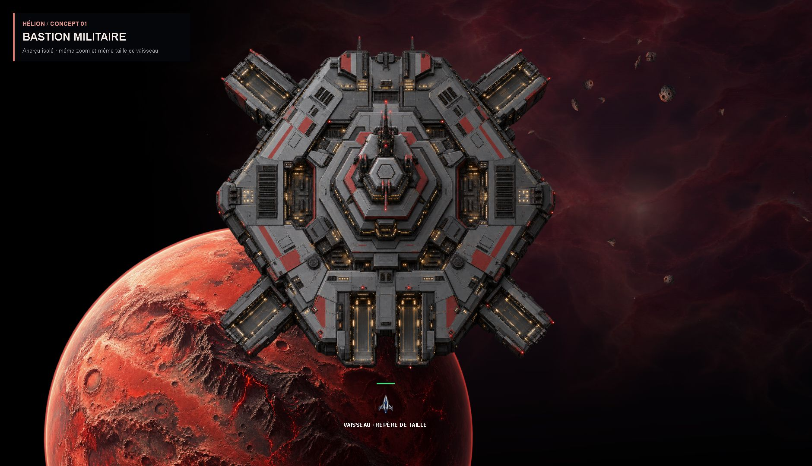
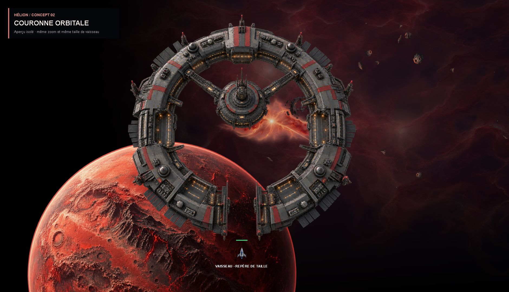
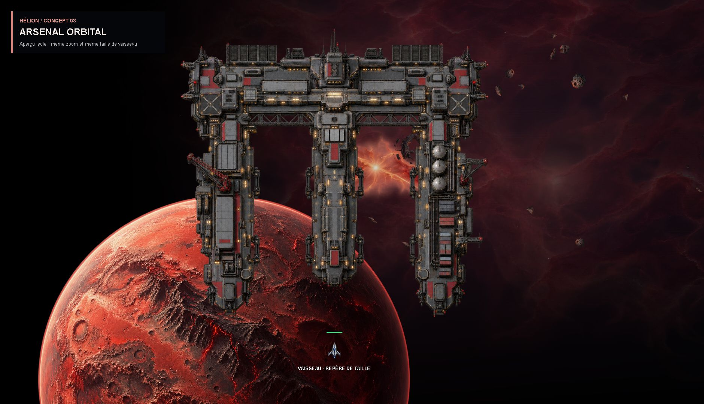
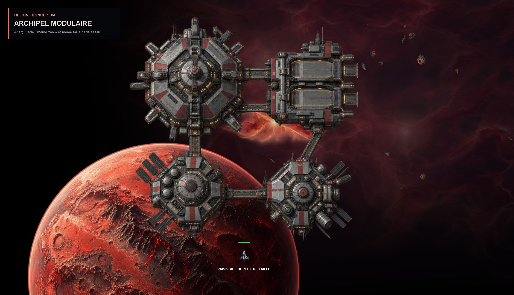

01Bastion militaire
Une forteresse compacte, blindée, avec de grands quais. La silhouette la plus massive : elle donne immédiatement du poids au quartier général.
Quatre silhouettes originales, présentées dans le décor actuel d’Hélion. Le cadrage, le zoom et la taille du vaisseau sont identiques pour comparer les proportions.

Une forteresse compacte, blindée, avec de grands quais. La silhouette la plus massive : elle donne immédiatement du poids au quartier général.

Un anneau ouvert autour d’un poste de commandement. Une présence imposante avec beaucoup d’espace libre pour voir le décor et les vaisseaux.

De grands bras d’amarrage, des ateliers et une structure de chantier spatial. Le choix le plus industriel, avec des zones de circulation très lisibles.

Une petite cité orbitale faite de bâtiments reliés. Une composition plus irrégulière, qui pourrait donner à chaque service sa propre place dans la base.
Tu peux choisir un numéro, ou combiner une silhouette avec les détails d’une autre proposition.